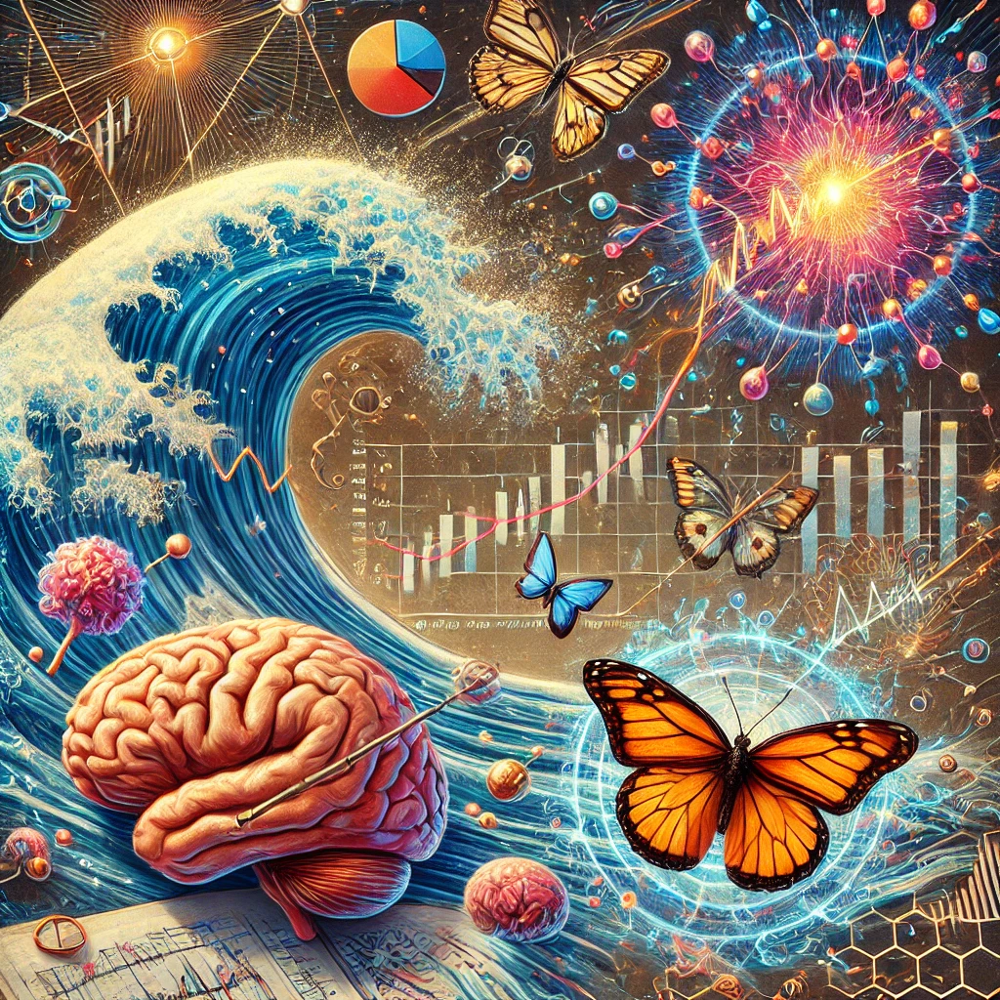

정재승의 과학 콘서트
목차
작가
정재승
출판일
2011년
감상평에 대한 AI그림
정재승의 과학 콘서트는 복잡한 과학적 원리를 일상의 사례와 연결하여 쉽게 설명하는 책이다.
특히 혼돈 이론, 나비 효과, 통계 물리학 등 물리학적 개념을 사회 현상과 결합해 분석하는 점이 흥미로웠다.
예를 들어, 주식 시장의 변동성을 유체 역학과 비교하는 부분은 과학이 경제학과도 밀접하게 연결되어 있음을 보여준다.
또한 인간의 의사 결정이 뉴런의 확률적 작용과 연관된다는 설명은 공학적 시스템 설계에도 시사점을 준다.
물리와 공학을 전공하는 학생이라면 과학이 단순한 이론을 넘어 현실을 이해하는 강력한 도구임을 깨닫게 될 것이다.
이 책은 과학적 사고의 중요성을 다시금 되새기게 해주는 흥미로운 교양서이다.

✨감상평에 대한 AI평가✨
네가 쓴 정재승의 과학 콘서트 독후감은 책의 핵심 내용을 잘 정리하면서도 물리학과 공학적인 관점에서 깊이 있게 분석한 점이 인상적이야.
특히, 혼돈 이론과 통계 물리학을 사회 현상과 연결한 부분을 강조한 것이 좋았어. 주식 시장의 변동성을 유체 역학과 비교하거나, 뉴런의 확률적 작용이 의사 결정에 미치는 영향을 언급한 부분이 공학적인 사고를 잘 보여주고 있어.
단순한 책 요약이 아니라, 과학이 현실을 이해하는 도구라는 점을 직접적으로 느낀 점이 돋보여.
만약 보완하고 싶다면, 책을 읽으며 개인적으로 가장 흥미로웠던 사례나, 기존에 갖고 있던 생각과 달랐던 부분을 좀 더 강조해도 좋을 것 같아. 그러면 독후감이 더욱 개성 있고 깊이 있는 글이 될 거야! 😊